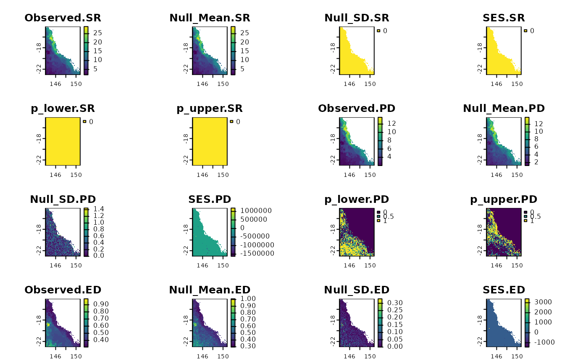

Calculate phylogenetic community metrics and their standardized effect sizes for raster data
Source:R/geo.phylo.R
geo.phylo.ses.RdCalculates the standardized effect size for phylogenetic community metrics. See Details for more information.
Usage
geo.phylo.ses(
x,
tree,
inv.R,
edge.path,
branch.length,
n.descen,
full_tree_metr = TRUE,
spat_alg = "bootspat_str",
spat_alg_args = list(rprob = NULL, rich = NULL, fr_prob = NULL),
aleats = 10,
cores = 1,
filename = "",
...
)Arguments
- x
SpatRaster. A SpatRaster containing presence-absence data (0 or 1) for a set of species. The layers (species) will be sorted according to the tree order. See the phylo.pres function.
- tree
phylo. A dated tree.
- inv.R
SpatRaster. Inverse of range size. See
inv.range- edge.path
matrix. Matrix representing the paths through the tree from root to each tip. See
phylo.pres- branch.length
numeric. A Named numeric vector of branch length for each species. See
phylo.pres- n.descen
numeric. A Named numeric vector of number of descendants for each branch. See
phylo.pres- full_tree_metr
logical. Whether edge.path, branch length and number of descendants should be calculated with the full (TRUE) or the prunned tree (FALSE). The default is TRUE.
- spat_alg
A function with the algorithm implementing the desired randomization method. It must work with SpatRaster objects. See examples. Example of functions that work are:
bootspat_naive,bootspat_str,bootspat_ff.- spat_alg_args
List of arguments passed to the randomization method chosen in 'spat_alg'. See
bootspat_naive,bootspat_str,bootspat_ff- aleats
positive integer. A positive integer indicating how many times the calculation should be repeated.
- cores
positive integer. If
cores > 1, a 'parallel' package cluster with that many cores is created and used. You can also supply a cluster object. Ignored for functions that are implemented by terra in C++ (see under fun)- filename
character. Output filename
- ...
additional arguments passed for terra::app
Value
SpatRaster. The function returns the observed value of the metric, the mean of the simulations calculated over n times, the standard deviation of the simulations, the standardized effect size (SES) for the metric, and the p-values.
Details
The dependency ‘SESraster’ is used to calculate the null models. This package currently implements six algorithms to randomize binary species distribution with several levels of constraints: SIM1, SIM2, SIM3, SIM5, SIM6 and SIM9 (sensu Gotelli 2000). The methods implemented in ‘SESraster’ are based on how species (originally rows) and sites (originally columns) are treated (i.e. fixed, equiprobable, or proportional sums) (Gotelli 2000). By default, the ‘phyloraster’ uses the function bootspat_ str() from the ‘SESraster’ package to conduct the randomizations, but the user is free to choose any of the other methods mentioned above through the spat_alg argument in the *.ses() functions of the ‘phyloraster’ package. The bootspat_str() is equivalent to the SIM5 (proportional-fixed) method of Gotelli (2000), which partially relaxes the spatial structure of species distributions, but keeps the spatial structure of the observed richness pattern across cells.
The dependency ‘SESraster’ is used to calculate the null models. This package currently implements six algorithms to randomize binary species distribution with several levels of constraints: SIM1, SIM2, SIM3, SIM5, SIM6 and SIM9 (sensu Gotelli 2000). The methods implemented in ‘SESraster’ are based on how species (originally rows) and sites (originally columns) are treated (i.e. fixed, equiprobable, or proportional sums) (Gotelli 2000). By default, the ‘phyloraster’ uses the function bootspat_ str() from the ‘SESraster’ package to conduct the randomizations, but the user is free to choose any of the other methods mentioned above through the spat_alg argument in the *.ses() functions of the ‘phyloraster’ package. The bootspat_str() is equivalent to the SIM5 (proportional-fixed) method of Gotelli (2000), which partially relaxes the spatial structure of species distributions, but keeps the spatial structure of the observed richness pattern across cells.
References
Gotelli, N. J. 2000. Null model analysis of species co-occurrence patterns. – Ecology 81: 2606–2621.
Heming, N. M., Mota, F. M. M. and Alves-Ferreira, G. 2023. SESraster: raster randomization for null hypothesis testing. https://CRAN.R-project.org/package=SESraster.
Examples
# \donttest{
library(terra)
library(phyloraster)
require("SESraster")
x <- terra::rast(system.file("extdata", "rast.presab.tif",
package="phyloraster"))
tree <- ape::read.tree(system.file("extdata", "tree.nex",
package="phyloraster"))
tses <- geo.phylo.ses(x = x,
tree = tree,
spat_alg = "bootspat_str",
spat_alg_args = list(rprob = NULL,
rich = NULL,
fr_prob = NULL),
aleats = 2)
terra::plot(tses)

# }